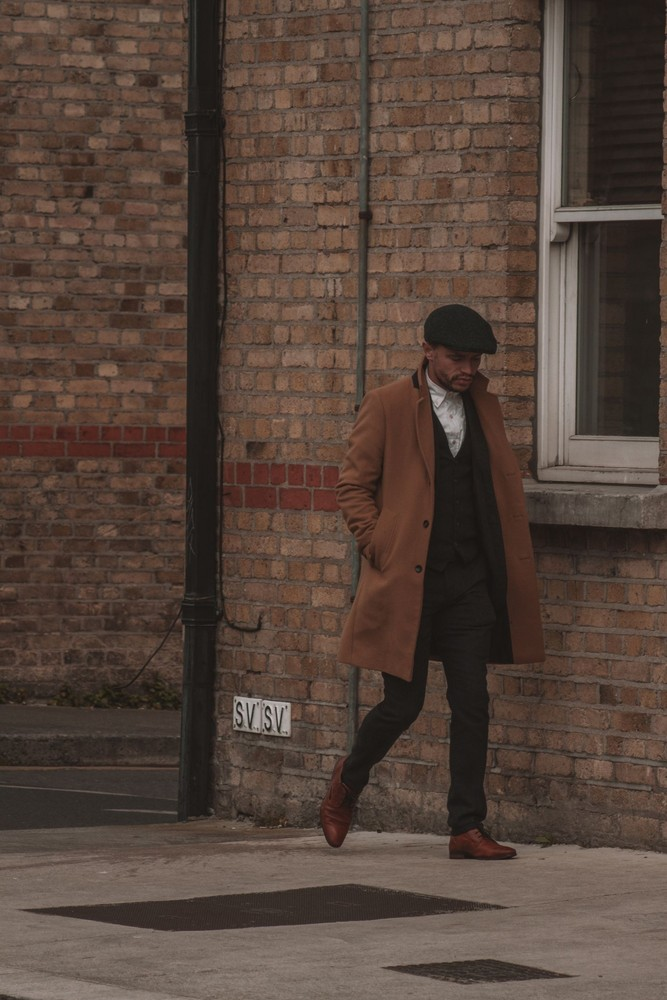

We build garments that outlast trends and outmaneuver winter
Overcoat Prism was established to preserve the architectural craft of bespoke heavy outerwear. In our Chicago cutting room, master tailors cut, shape, and hand-pad floating canvasses for coats that endure for generations.
Honoring the ancient geometry of cloth manipulation
True bespoke tailoring begins with understanding that wool is a living, responsive organic fiber. Unlike automated mass manufacturing, where flat fabric is stamped into identical panels by computerized laser cutters, our cutters sculpt wool using steam, tension, and grain orientation.
Every roll of cloth rests on our cedar racks for forty-eight hours to allow fiber relaxation before chalk touches the surface. We align checks and twill angles across lapels, pocket welts, and back seams with millimeter precision, creating continuous harmonious patterns that move naturally with the human gait.
Our Construction Pillars

The living horsehair chest piece
The structural heart of every Overcoat Prism coat is its hand-padded canvas. We stitch together a multi-tiered foundation of coarse Mongolian horsehair for chest roll, soft wool fleece for comfort, and Irish linen for lapel stability.
Using thousands of diagonal hand-stitches, our tailors impart a permanent concave curve to the chest and a three-dimensional outward roll to the lapels. Because the canvas is never glued to the outer wool, the layers float freely, responding smoothly to your every movement.
Our Three Sartorial Promises
Pure Natural Integrity
Every thread, canvas layer, lining, and button comes from natural origins. We ban polyester blends, synthetic fusions, and petrochemical stiffeners.
Generational Longevity
Our coats are designed to survive decades of daily winter commuting. When maintained properly, an Overcoat Prism coat becomes an heirloom passed down through families.
Transparent Fitting
No rushing through pre-made racks. We schedule dedicated two-hour salon fitting sessions with master cutters who adjust every millimeter until balance is absolute.
The Elegance of Hand-Worked Buttonholes & Linings
The final stage of bespoke creation separates exceptional tailoring from ordinary garments. Our buttonholes are slit with a chisel, then meticulously bound by hand using twisted gimp silk thread in a dense, raised purl stitch that takes twenty minutes per buttonhole.
Undercollars are backed with dense wool melton felt, hand-shaped and steam-ironed so the collar hugs the neck without gaping. Interior pockets are reinforced with jetted double-piping and lined with breathable Bemberg cupro silk that glides effortlessly over knitwear.